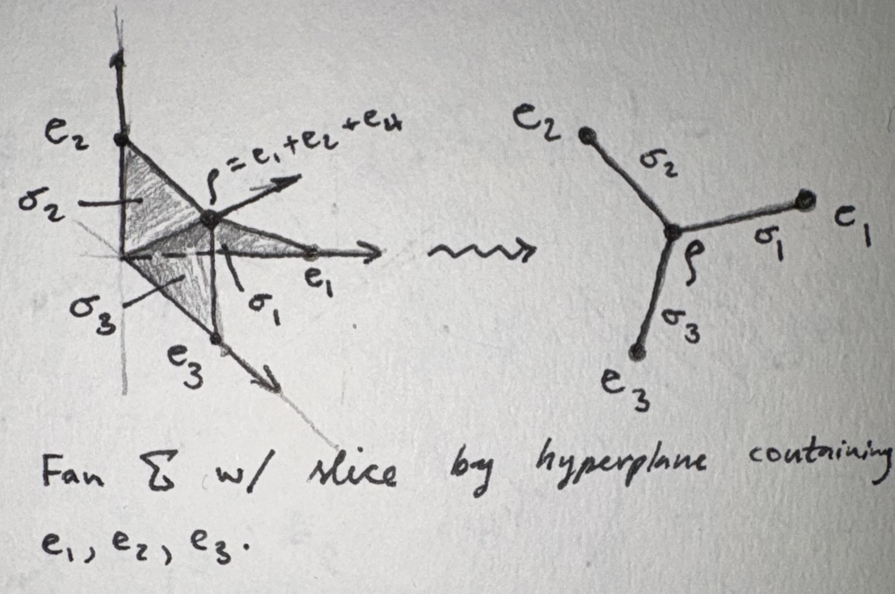

Example
Consider the intersection lattice \(\mathcal L\) given by three hyperplanes (codimension 1) \(H_1,H_2,H_3\) meeting at a codimension 2 locus \(\ell\) together with the unique building set \(\mathcal G = \{H_1, H_2, H_3, \ell\}\). We compute the Chow group of the toric variety \(X_{\Sigma(\mathcal L, \mathcal G)}\). Note that the ambient space of the hyperplane arrangement does not affect \(X_{\Sigma(\mathcal L, \mathcal G)}\); it depends only on the combinatorics. See also this example from a purely combinatorial perspective. Here is the relevant combinatorial data:
- the atoms of \(\mathcal L\) are the hyperplanes: \(\mathcal A = \{H_1, H_2, H_3\}\).
- the nested simplicial complex is \(\mathcal N(\mathcal L, \mathcal G) = \big\{\emptyset, \{H_i\}, \{\pt\}\big\} \cup \big\{\{H_i, \pt\} \big\}\)
The toric variety associated to an atomic lattice
Definition
Let \(\mathcal L\) be a finite lattice with unique minimal element \(\hat 0\) whose atoms are \(\mathcal A = \{A_1,...,A_n\}\), and let \(\mathcal G\) be a building set for \(\mathcal L\). For each \(X\in \mathcal L\) let \(\lfloor X\rfloor = \{A\in \mathcal A \mid X \geq A\}\) and define a vector \(v_X\in \mathbb R^n\) by \[(v_X)_i = \begin{cases}1 & \text{if } A_i \in \lfloor X\rfloor \\ 0 & \text{otherwise}\end{cases}\] so that the atoms of \(\mathcal L\) form the basis of \(\mathbb R^n\). Now for each \(S\subseteq \mathcal L\) let \(V(S)\) be the rational polyhedral cone in \(\mathbb R^n\) spanned by the vectors \(v_X\) for \(X\in S\). Finally, let \[\Sigma(\mathcal L, \mathcal G) = \{V(S) ~ \mid ~ S\in \mathcal N(\mathcal L, \mathcal G)\}\] be the fan consisting of all cones associated to nested sets in \(\mathcal L\). Note that the rays of \(\Sigma(\mathcal L, \mathcal G)\) are in bijection with the vertices of \(\mathcal N(\mathcal L, \mathcal G)\) (and therefore the elements of \(\mathcal G\)), the \(2\)-dimensional facets of \(\Sigma(\mathcal L, \mathcal G)\) are in bijection with the edges of \(\mathcal N(\mathcal L, \mathcal G)\), etc.
The toric variety associated to \(\mathcal L, \mathcal G\) is \(X_{\Sigma(\mathcal L, \mathcal G)}.\)
Toric Variety Associated To Atomic Lattice
In this case, we have \(4\) one-element subsets of \(\mathcal N(\mathcal L, \mathcal G)\), and hence \(4\) rays in \(\Sigma(\mathcal L, \mathcal G)\). They are \(e_i\) associated to the atom \(H_i\) and the ray \(\rho = e_1 + e_2 + e_3\) associated to \(pt\). We additionally have three \(2\)-dimensional cones \(\sigma_i = \spann(e_i, \rho)\) associated to the \(2\)-element nested set \(\{H_i, \pt\}\). Below is the fan \(\Sigma(\mathcal L, \mathcal G)\) together with the graph obtained by slicing the fan by the hyperplane in \(\mathbb R^3\) containing the points \(e_1,e_2,e_3\). Notice that this graph is precisely the simplicial complex \(\mathcal N(\mathcal L, \mathcal G)\).

Chow groups of this toric variety Let \(N\) be the integer lattice generated by the vectors \(e_i = v_{H_i}\) and \(M\) be its dual. We calculate each Chow group \(A_k(X_{\Sigma(\mathcal L, \mathcal G)})\) via the following exact sequence.
Recall that for a cone \(\sigma\) in a polyhedral fan \(\Sigma\) in a lattice \(N\) with dual lattice \(M\),
- \(N_\sigma\) denotes the linear span of \(\sigma\cap N\)
- \(M(\sigma) = \sigma^\perp \cap M\) is the character lattice of the toric variety given by the orbit closure \(V(\sigma)\) in \(X_\Sigma\).
Theorem
Let \(\Sigma\) be a polyhedral fan in a lattice \(N\cong \mathbb Z^n\) and \(d = \dim X_\Sigma\). Denote by \(V(\sigma)\) the torus orbit closure corresponding to the cone \(\sigma \in \Sigma\). Then the \(k\)th Chow group of \(X_\Sigma\) is generated by the orbit closures \(\{V(\sigma)\}_{\sigma \in \Sigma(n - k)}\) and has the following presentation: \[\bigoplus_{\tau\in \Sigma(n - k - 1)}M(\tau) \xrightarrow{\alpha} \bigoplus_{\sigma \in \Sigma(n - k)} \mathbb Z \cdot [V(\sigma)] \to A_k(X_\Sigma) \to 0.\] The map \(\alpha = \bigoplus \alpha_\tau\) is defined on \(m \in M(\tau)\) by \[\alpha_\tau(m) = \sum_{\sigma \in \Sigma(n - k)}\langle m, u_{\sigma, \tau}\rangle \cdot [V(\sigma)]\] where \(u_{\sigma,\tau}\) is the unique element in the lattice \(N_\sigma/N_\tau \cong \mathbb Z\) which is
- a generator for \(N_\sigma/N_\tau\) as a group (of which there are two choices) and
- is represented by an integral point of \(\sigma\).
Chow Ring Of General Toric Variety
- For \(k = 0\), we have no \(3\)-dimensional cones and hence \(A_0(X_{\Sigma(\mathcal L, \mathcal G)}) = 0\).
- For \(k = 1\), I claim that \(\alpha\) is surjective and hence \(A_1(X_{\Sigma(\mathcal L, \mathcal G)}) = 0\). It will suffice to consider \(\alpha_{\tau_i}\) where \(\tau_i\) is the ray generated by \(e_i\). Start with \(i=1\). The character lattice of \(V(\tau_1)\) is \(M(\tau_1) = \tau_1^\perp \cap M = \mathbb Z\langle e_2^*, e_3^*\rangle\). The only \(2\)-dimensional cone containing \(\tau_1\) is \(\sigma_1\), where
\[N_{\sigma_1}/N_{\tau_1} = \mathbb Z u_{\sigma_1, \tau_1}, ~ u_{\sigma_1,\tau_1} = \rho + N_{\tau_1} = \overline{e_2 + e_3}.\] Then \[\alpha_{\tau_1}(e_2^*) = \langle e_2^*, \overline{e_2 + e_3}\rangle [V(\sigma_1)] = [V(\sigma_1)] = \alpha_{\tau_1}(e_3^*).\] We similarly get that \([V(\sigma_i)]\) is in the image of \(\alpha_{\tau_i}\) for \(i = 2,3\). Since the \([V(\sigma_i)]\) generate the second term in the exact sequence, \(\alpha\) is surjective.
- For \(k = 2\), \(A_2(X_{\Sigma(\mathcal L, \mathcal G)}) \cong \mathbb Z\). Keep the notation from the previous case and set \(\tau_4 = \cone(\rho)\). The second term in the exact sequence is the \(4\)-dimensional free \(\mathbb Z\)-module whose generators are the \([V(\tau_i)]\). For \(i = 1,2,3\) the generator \(u_{\tau_i, 0}\) is \(e_i\) and \(u_{\tau_4, 0} = \rho = e_1 + e_2 + e_3\). The domain of \(\alpha\) is the entire character lattice \(M\), and
\[\alpha(e_i^*) = \sum_{i=1}^4 \langle e_i^*, u_{\tau_i, 0}\rangle \cdot [V(\tau_i)] = [V(\tau_i)] + [V(\rho)].\] Therefore \(\alpha\) is injective and the Smith normal form of \(\alpha\) is a \(4\times 3\) matrix consisting of a \(3\times 3\) identity matrix concatenated row-wise with the \(1\times 3\) matrix consisting of only \(0\)’s. Hence \(A_2(X_{\Sigma(\mathcal L, \mathcal G)})\) is a rank \(1\) free \(\mathbb Z\)-module.
- Finally, for \(k = 3\) \(A_3(X_{\Sigma(\mathcal L, \mathcal G)})\cong \mathbb Z\).